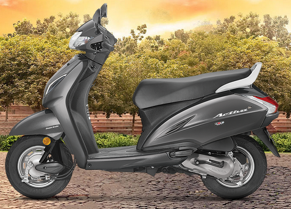
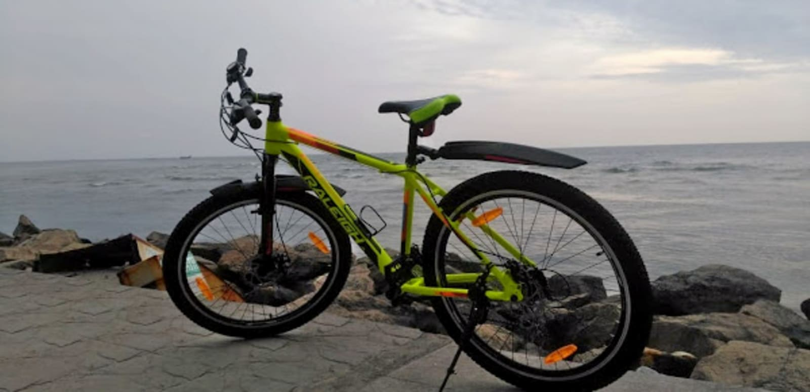
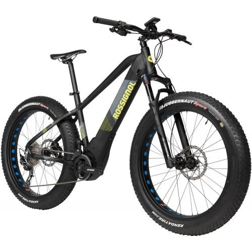
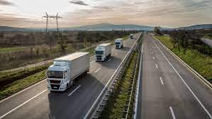
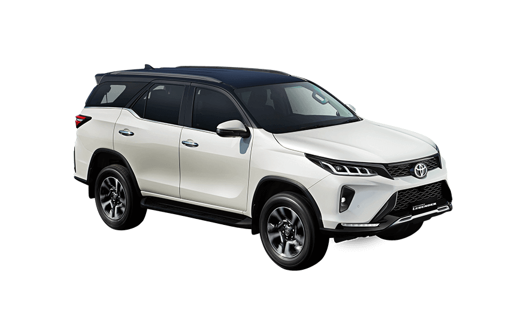

Rent,Try & then Buy is the new Trend
in 2020.know how?
The traditional method of looking for a vehicle that best suits your
needs and then buying it is fading away quickly. In 2020, it is all
about trying out the vehicles, assessing them, and only then
considering buying them. With the dawn of digitization, the mobility
industry has experienced a huge shift in the way […]

Effect on Urban Mobility after Covid19 how Bike Rentals will help
you
Commute
The traditional method of looking for a vehicle that best suits your
needs and then buying it is fading away quickly. In 2020, it is all
about trying out the vehicles, assessing them, and only then
considering buying them. With the dawn of digitization, the mobility
industry has experienced a huge shift in the way […]

Impact of Government’s subsidies on
Electric vehicles
Electric vehicles enjoy unflinching support of individuals,
environmentalists, social groups and authorities for the sheer reason
that they are thought to be more environment-friendly than their
gas-powered counterparts. Governments, in particular, have offered
attractive and generous subsidies and tax credits on electric vehicles
[…]
Electric Vehicle Charging Station
Infrastructure – Feasible or not?
All you want to know about Electric Vehicle Charging Station’s
Infrastructure: Electric vehicles are quickly gaining popularity in
all segments of automobiles. B2B giants in the relevant sectors are
already investing a lot on electric delivery bikes. […]

Is e-bike supposed to run long range
distances without pedaling?
Of all the Electric Vehicles on roads, e-bikes are gaining popularity
among people who prefer environment-friendly vehicles that also allow
them to commute without getting stuck in the traffic. E-bikes have
lately caught the pulse of both youngsters and the middle-aged people
in most cities in India. […]

The future of heavy duty Electric
Vehicles – ONN Bikes
Of all the Electric Vehicles on roads, e-bikes are gaining popularity
among people who prefer environment-friendly vehicles that also allow
them to commute without getting stuck in the traffic. E-bikes have
lately caught the pulse of both youngsters and the middle-aged people
in most cities in India. […]
Gasoline vs Electric Bike: What
happens to Gasoline if all go Electric?
Of all the Electric Vehicles on roads, e-bikes are gaining popularity
among people who prefer environment-friendly vehicles that also allow
them to commute without getting stuck in the traffic. E-bikes have
lately caught the pulse of both youngsters and the middle-aged people
in most cities in India. […]

Impact of Electric Vehicles on city’s
Air Quality – ONN Commute
Of all the Electric Vehicles on roads, e-bikes are gaining popularity
among people who prefer environment-friendly vehicles that also allow
them to commute without getting stuck in the traffic. E-bikes have
lately caught the pulse of both youngsters and the middle-aged people
in most cities in India. […]
7 Extreme (Cold & Hot) Weather Tips
for your Electric Bike
Of all the Electric Vehicles on roads, e-bikes are gaining popularity
among people who prefer environment-friendly vehicles that also allow
them to commute without getting stuck in the traffic. E-bikes have
lately caught the pulse of both youngsters and the middle-aged people
in most cities in India. […]